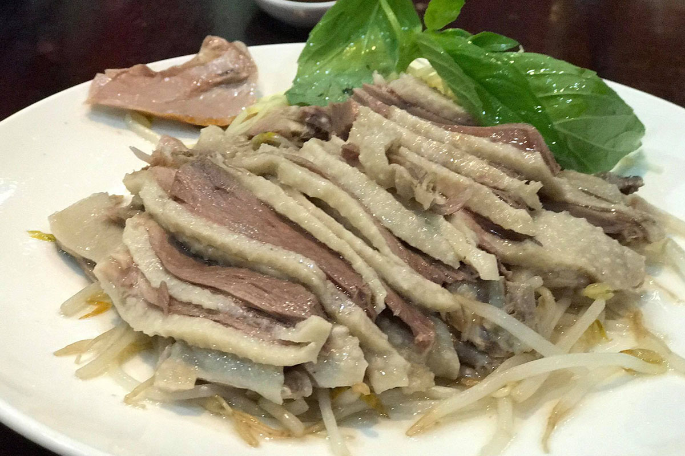
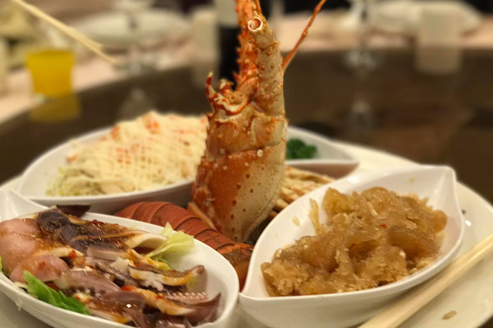
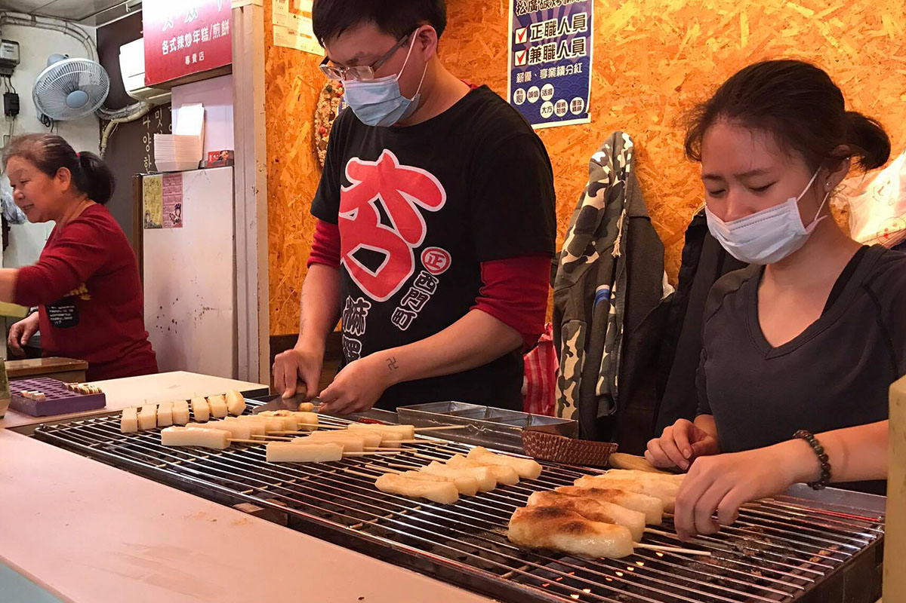
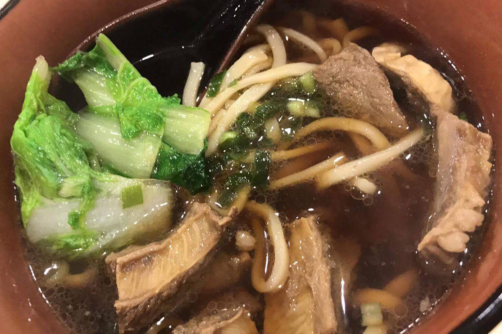
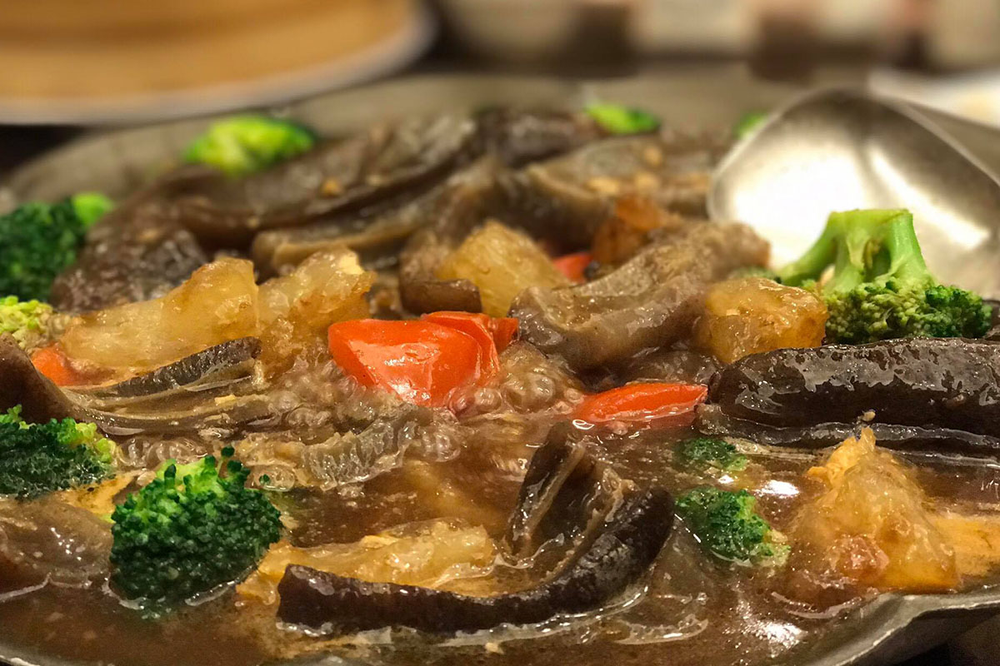

Taking my Asian food obsession to a new level with my annual trip home. Slowly crossing off (and documenting) my bucket list of food items I've been dreaming of all year. I will do my best to drop Google Map coordinates so visitors to Taiwan can also find these places. Enjoy!
-  Goose Meat (鵝肉) Sanchong MRT 三重捷運站
-  Lobster & Seafood（龍蝦與海鮮) Yuanshan MRT Hai Pa Wang 圓山捷運站海霸王
-  Grilled Mochi (烤麻糬) Ximen Shopping District 西門町
-
 Sergestid Shrimp Glutinous Oil Rice (櫻花蝦米糕) Yuanshan MRT Hai Pa Wang 圓山捷運站海霸王
Sergestid Shrimp Glutinous Oil Rice (櫻花蝦米糕) Yuanshan MRT Hai Pa Wang 圓山捷運站海霸王
-  Beef Noodle Soup (牛肉麵) Taipei Main Station 台北火車站三商巧福
-  Sea Cucumber & Broccoli in a thick stew
-
 Chicken Stew with Scallops（鳳貝砂鍋雞） Yuanshan MRT Hai Pa Wang 圓山捷運站海霸王
Chicken Stew with Scallops（鳳貝砂鍋雞） Yuanshan MRT Hai Pa Wang 圓山捷運站海霸王
-
 Beef Roll（牛肉捲餅） Taipei Main Station 台北火車站開封街外星人小舖
Beef Roll（牛肉捲餅） Taipei Main Station 台北火車站開封街外星人小舖